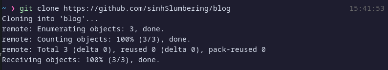

Static Webpage Tutorial
Making a simple yet powerful blog using Hugo and Github pages:
In this tutorial we will walk you through how to make a simple static webpage using GitHub pages and hugo
Static sites refer to view only webpages. They are widely used for rapid development. Although Hugo can be used to add various functionalities this tutorial will be laser focused on how to get a simple static webpage up and running to display the tutorial assigned to us.
Prerequisites and Precautions
- Some knowledge of git and the terminal
- This tutorial was made with gnu/Linux in mind. All steps shown have been done on an Arch-Linux 5.19 kernel system. We shall try to accommodate other Linux distros wherever needed. Users of other “special” OSes are requested to figure out the terminal and other platform specific stuff for themselves.
- A very basic knowledge of markdown. see here.
- Angle brackets shown in commands here are for illustrative purposes. Do not keep the angle brackets when actually running the command. Replace the entire text bound inside the bracket (along with the brackets) with the parameters specified inside the brackets for your specific case. One exception being Hugo snippets where it has been specified.
Step 1: Downloading Hugo
There are several ways to install Hugo.
For Arch Linux and its derivatives, simply run
sudo pacman -S hugo
For Fedora, Red Hat and CentOs use-
sudo dnf install hugo
For Debian and it’s derivatives use-
sudo apt-get install hugo
Step 2: Opening GitHub repositories
While there are several ways to use Hugo to make and have GitHub pages host a static website, we will follow a very bare bones approach. We shall open 2 GitHub repositories
- A repository to host the blog files for Hugo
- A repository for the generated html + JavaScript files from Hugo. We need the generated website repo (henceforth called genrepo) to be a submodule of the blog so it is easy to update the site by just changing the blog
Opening the genrepo(generated website repository)
- Log into your GitHub account and you should see a “new” button next to recent repositories.
- In order to avoid errors and confusion name your repository as {yourusername }.github.io, We couldn’t get GitHub pages to host the web page otherwise, from a non pro account. Feel free to experiment, but yeah, expect errors if you skip this step.
- Add a “README.md” file to your main branch and commit the changes. (the file doesn’t have to contain anything, this acts as your entry file for your site. GitHub pages looks for in index.html, index.md or README.md file as the entry file for your site).
Opening the blog repository
- Same as step one above
- Name this repository whatever you like. We will call our blog repository, “blog”(marvel at our creativity).
- Again add a readme and at least one commit.
Step 3: Using Hugo to initialize a site
- Clone the “blog” repository that is the repository that will host the files for Hugo into your local machine by simply running
git clone <link to your hugo host repository that is blog repository>
 2. go into the cloned folder and run
hugo new site <sitename>
note that the “site name” specified here will be the name of your blog site.
Step 4: Specifying a theme for your web page
Go to Hugo themes. Feel free to check out and pick whatever theme you like. Read through your desired theme’s page and follow instructions. In this tutorial we will use the following method to add a theme. Which is the easiest way and will require little to no configuration.
- Go to Hugo themes.
- Select a theme
- Navigate to your site’s folder. That is
blog/sitename - Run the following command to clone the theme to the themes folder. We use the cactus theme in our example.
# generally
git clone <github page of the theme> themes/<theme name>
# for cactus
git clone https://github.com/monkeyWzr/hugo-theme-cactus.git themes/cactus
Step 5: Configure the site
- Inside this
blog/sitenamedirectory you will find aconfig.tomlfile. All commands in this sections should be run from this directory. - Open this file inside your preferred text editor. You will see the following
baseURL = 'http://example.com/'
languageCode = 'en-us'
title = 'My New Hugo Site'
We want to change it to
baseURL = 'https://<link to your genrepo>/'
languageCode = 'en-us'
title = '<blogname>'
author = '<author>'
theme = '<theme>'
For this example
baseURL = 'https://sinhSlumbering.github.io/'
languageCode = 'en-us'
title = 'shrekSwamp'
author = 'Me'
theme = 'cactus'
Notice the ’s’ in https we want to enforce https
3. Run the following command
hugo server
This will host a static site from your localhost. click on the URL to view the web page in your browser.
Step 6: Adding the repo to hold the generated website
Now we add the genrepo to hold the generated code to be displayed as a GitHub pages site.
- clone the genrepo to your site directory
git clone <repo URL>
# example
git clone
2. add the genrepo as a submodule to your blog directory
git submodule add -b main <repo URL>
Step 7: Creating a post
As we can see the site only contains a static page without any content. The idea is to add pages here to access. Sort of like a very rudimentary blog. Goal here is to create posts for your blog. For this tutorial we shall add a tutorial to our blog.
- Run the following command to add a new post
# generally
hugo new posts/<post name>.md
# in this example
hugo new posts/tutorial.md
- The post is at
content/posts/to edit the post simply navigate to post and open it in your preferred editor. - To view the post in the site remove the draft mark. that is we shall see -
---
title: "Tutorial"
date: 2022-09-30T16:13:15+06:00
draft: true
---
we want to change it to -
---
title: "Tutorial"
date: 2022-09-30T16:13:15+06:00
---
- Run the following command to see if the new post shows up correctly in the structure
hugo server
You should see a post show up
Step 8: Adding content to our post
What Hugo does is generates JavaScript and html required to host a static site from markdown. Now learning a new thing might sound intimidating, but markdown is literally one of the easiest and the most intuitive thing ever. 5 mins should be enough to learn enough to get this blog up and running. As you are most probably, a fellow classmate, my man, you should enjoy this rare W. We know we do. And if you want to make life harder for yourself, feel free to use html. We, won’t. Important: Please remember not to delete the already text generated at the top of the file that we edited in step 7. This part is crucial metadata to generate the site.
If you for whatever reason, like our tutorial and want us to make a more detailed section on markdown, annoy Noki.
What even is markdown
Ask wikipedia-sensei. But basically it’s a markup language. Used to create formatted text from plain-text. As opposed to wysiwyg editors, markdown has to be compiled/parsed later to show the formatted text. Although some editors exist which can compile/parse markdown on the fly.
Markdown resources
- Markdown Basics, convenient cheat sheet
- Interactive tutorial
- Hugo specific markdown guide.
- Other Hugo resources related to editing. There are an incredible amount of things possible with markdown and it’s derivatives. Hugo uses the goldmark parser. Goldmark is very new. Therefore resources are sparse. A well worded Google search should help you through any queries(try searching with ‘Hugo’/‘Hugo GitHub’ rather than goldmark)That’s what we did. Better yet, Feel free to experiment and find out.
Images
“But tutorial guy” you ask, “How will I add this cool picture of sanic hegehog to my site?”.  A common and understandable question. If you have seen the markdown guides you should know the syntax to add a picture is this
A common and understandable question. If you have seen the markdown guides you should know the syntax to add a picture is this


We could pull images off other websites but we can’t guarantee that picture remaining tied to the links (much like an nft lol). So ideally we want to control what picture we upload and how long it stays up. We therefore follow these simple steps
- We store the images in the static folder inside of our site directory. The exact location is inside the a folder named the same as the post name inside the posts folder inside the static directory that is the path should be
static/posts/<post name>/<imagename>.<imageext>for examplestatic/posts/tutorial/sanic.png. Thus the images are stored in the blog repo. - We then simply link the images using
<!--- general --->

<!--- example -->

Your directory structure should look something like this
static
└── posts
└── tutorial <- Notice the name of the post
└── sanic.png
content
└── posts
└── tutorial.md <- The image will be linked in this post.
As an added bonus note that adding images this way is easier as you don’t have to specify a huge link or directory.
Embedding other websites’ content
WARNING: So in this section we have to keep the angle brackets in the code
“But tutorial guy” you ask again, “I really need to embed a video to my site. I want to cater to the obliterated attention span of the internet users of current year.”
Indeed that is very important. You can use Hugo shortcodes to achieve this functionality.
Let’s add the most iconic YouTube video to this page.
Here the ‘id’ part comes from the YouTube link. If you already haven’t memorized it, this id comes from this link https://www.youtube.com/watch?v=dQw4w9WgXcQ the part after ?v= is our id. Lets enjoy the video now -
hugo server
To see if your edits show up nicely
Step 9: Building the website and publishing it to GitHub pages
Startoff by going inside the site directory.
- Build the website by running the following
# general
hugo -t <theme name>
# example
hugo -t cactus
You can ignore the warning here. It didn’t cause us any issues. (That we comprehend) 2. Clear the submodule
rm -rf <name of genrepo>/*
# example
rm -rf sinhSlumbering.github.io/*
- Copy the generated content into the genrepo to be hosted
cp -r public/* <name of genrepo>/
# example
cp -r public/* sinhSlumbering.github.io/
- Go inside the genrepo
- Push genrepo to GitHub
git add .
git commit -m "<commit message>"
git push
 6. Return to your blog repo.
7. Push changes made to blog repo into GitHub
6. Return to your blog repo.
7. Push changes made to blog repo into GitHub
git add .
git commit -m "<commit message>"
git push
- WAIT it takes a while for GitHub to host the page.
Step 10: Enjoy your site
After you have waited for a considerable amount of time you should be able to access your site by visiting {your username}.github.io
Step 11: changes
If you want to make changes like adding new posts and/or editing. follow steps 7 through to 10.
Cautions
- IT IS OF THE UTMOST IMPORTANCE that you remain in the specified directory when running a shell command To help with this we have specified all changes in directory either in the screengrab or explicitly
- Remember to push to the genrepo repository first then the blog directory.
- WAIT after pushing to GitHub to access the site. As Gabe Newell famously said
“These things, they take time” -GabeN
FAQ
Why didn’t you use Jekyll or any other generator? Why Hugo? You see, Jekyll need at least one more dependency than Hugo(Hugo comes with everything bundled). That is literally it. We chose the path of least resistance.
For further questions annoy Noki. And we will get back to you soon.
References
- GitHub markdown and GitHub advanced markdown
- Hugo Documentation
- https://parzival2.github.io/blog/posts/add-images-hugo/
- MarkdownGuide
- https://www.youtube.com/watch?v=LIFvgrRxdt4
- And finally Wikipedia
Comments
Comments in a static site? huh? well it can be done apparently. We however have a simpler implementation. The comment section has been moved to this wall